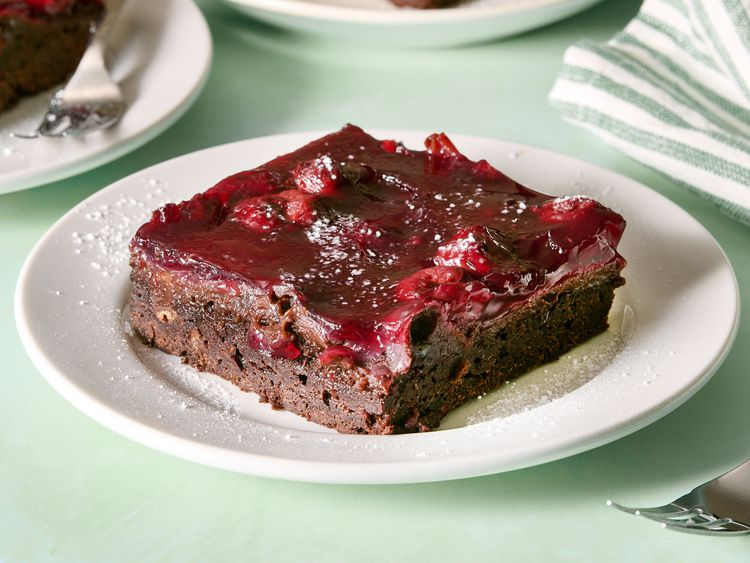

Home
Fudgy Black Forest Bars

Description
These fudgy Black Forest bars are a decadent dessert that is somewhere
between brownie and cake, loaded with chocolate and bathed in cherries.
They're fabulous with coffee.
Ingredients
- 1 cup salted butter, softened
- 1 1/2 cups white sugar
- 2 tea spoons vanilla extract
- 4 large eggs
- 2 cups all purpose flour
- 1/2 cup unsweetened triple chocolate baking cocoa
-
1 large dark chocolate bar, chopped into chunks (about 1 cup chunks)
- 1 (21 ounce) can cherry pie filling
- 1 tablespoon confectioners sugar (optional)
Directions
-
Preheat the oven to 350 degrees F and then greade a 9x13 inch pan.
-
Beat butter and sugar together until creamy. Add some vanilla. Add eggs,
1 at a time, beating in each egg completely before adding the next one.
-
Stir in flour and cocoa powder until fully combined. Add in some
chocolate chunks.
-
Spread the mixture on to the greased pan, then pour pie filling over the
top.
-
Bake it for 40 mins, then check if it is sompletely cooked. A toothpick
inserted should come out with few moist crumbs. Bake for 10 more
minutes, if required.
-
Cool completely, sprinkle with confectioner's sugar. Cut into bars